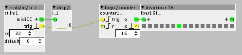

I'm struggling with simple things and I see if I can expose them here, hoping that someone can share some knowledge 
a button connected through MIDI CC to control a Radio object

Button Press and Release are triggering the counter, so this makes it jumping two units at a time
Any way to make it go up only one unit at a time?